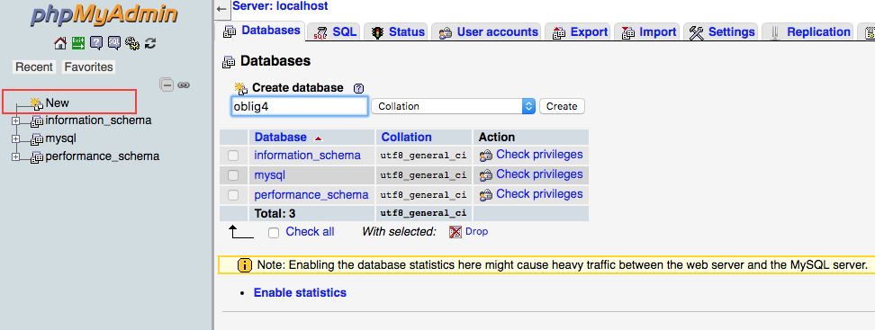
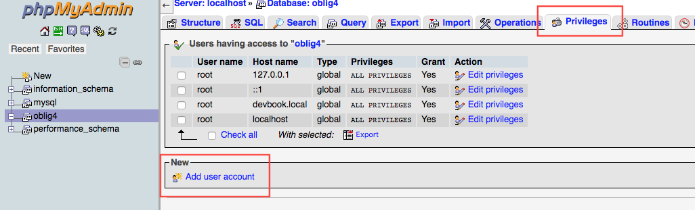
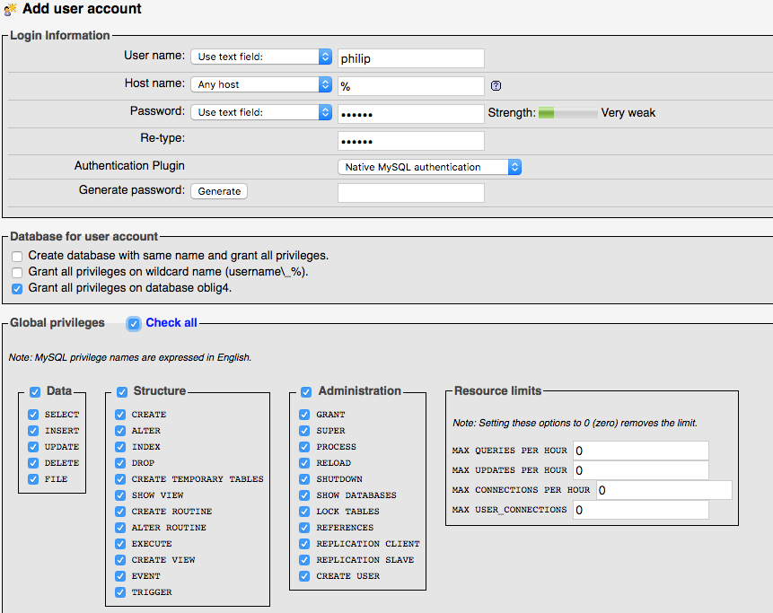
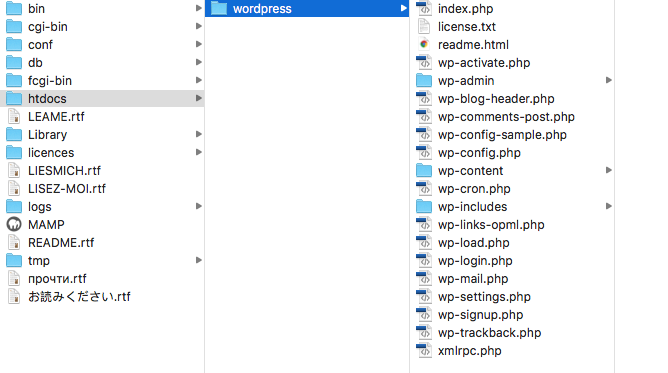
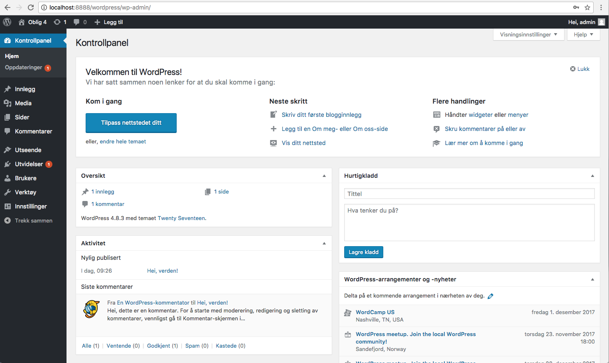

Slik installer du WordPress
For å komme i gang med WordPress må man installere plattformen. I denne artikkelen tar vi for oss hvordan vi gjør dette lokalt via programmet Mamp. På lenkene nedenfor kommer du til nedlastningssidene til henholdsvis Mamp og Wordpress.
- Mamp
- WordPress
Mamp
Programmet ser slik ut når du åpner det:
Klikk "Start Servers" for å komme i gang. Herfra skal vi videre inn i Tools -> phpMyAdmin. Dette er for å sette opp en database slik at vi får installert og logget oss inn i WordPress. Fra phpMyAdmin klikker man videre på "new" for å opprette en ny database. Når det er gjort klikker man videre til "Privileges" og "Add new user".


Pass på å huk av for "Check all" i Global privileges. 
Nå er det klart for å installere WordPress. Den nedlastede .zip-filen pakkes ut og legges i htcdocs-mappen du finner i Mamp-mappen du finner i programmer.

Selve installasjonen er nærmest identisk envher annen installasjon. Når du kommer til fanen med database-informasjonen skriver du inn informasjonen vi laget i phpMyAdmin. Da er det bare til å logge inn.

Nå som du er logget inn møter du kontrollpanelet. Sørg for at alt er oppdatert i WordPress. 